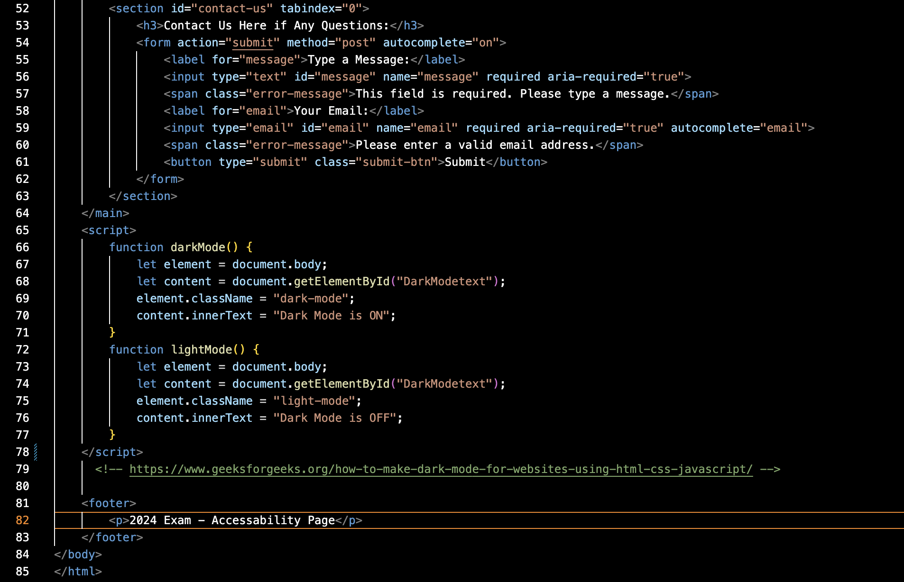

Ensuring Accessibility on Web Page
Our web page focuses on accessibility to serve all users, following central universal design principles, such as WCAG 2.1 Guidelines for accessibility regarding web content. Here are the main ways we achieve this:
How we ensure accessibility
To ensure that the webpage cater to all users effectively, we have implemented a few different measures that we will elaborate on. The first key measure is our use of semantic HTML element, such as "header", "main", "footer" and "btn" among more others, to highlight the elemtents' role and help the website navigation for assistive technologies, like screen readers. HTML plays a foundational role in achieving the goal of creating accessible environments in the context of developing a web site. While automated tests identify many issues regarding accessibility, they often miss more nuanced aspects of universal design. Thoughtful coding choices requires that the developers consider real-world user needs and therefore extends beyond automated testing. For example, tests might confirm that code tags are present, but thoughtful coding ensures that they are used appropriately. Below, you can see a screenshot of our code showing some examples of use the of semantic HTML and thoughtful coding.
Another way to ensure accessibility is by using simple, readable and clear language with structured content for readability. Also, by enabling the choice of dark- or light mode and the use of high color contrast colors in our styling in the CSS-file, and also by providing alternativ text for images in the HTML, we provide accessibility to users with low vision. We have mostly used button-attributes instead of the div-attributes for clickable elements to enable the use of external tools, such as screenreaders, without any problems. Additionaly, we have made the interactive elements in this website easy to identify. Below, you will see a screenshot-image of results from Lighthouse' accessibility testing of this website.

Examples of other mesures are that we have included ARIA (Accessible Rich Internet Applications), attributes such as aria-lable for accessibility if the required fields aren't visually obvious and for allowing error message updates in real-time. In addition, by incorporating ARIA attributes, our website allows keyboard operability, by making the interactive elements operable using the keybord. We have created clear visible indicators, such as a blue focus outline, helping the users focus on the current selected elements. By following the WCAG 2.1 Guidelines, we ensure that our content's accessibility to users with various diabilities, for example auditory and visual impairments.